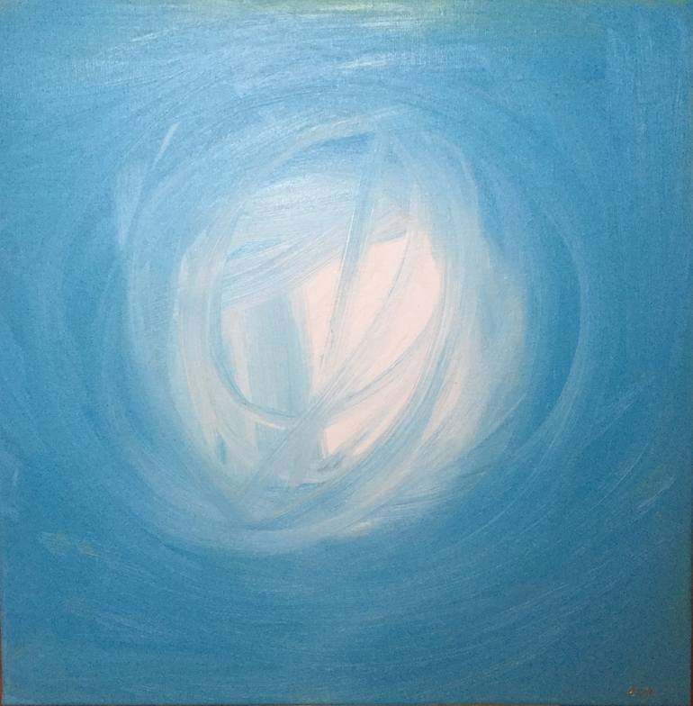
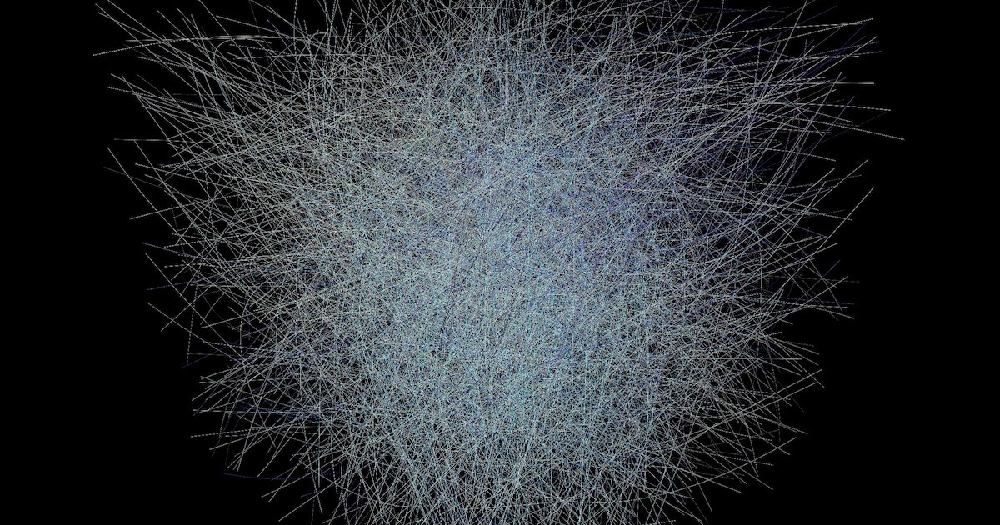
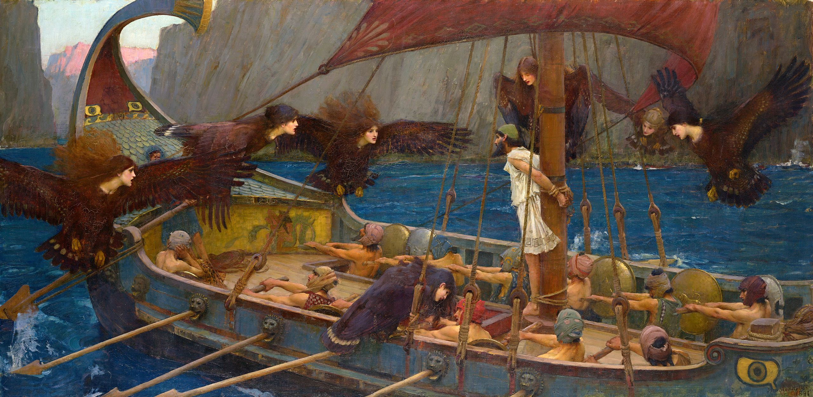
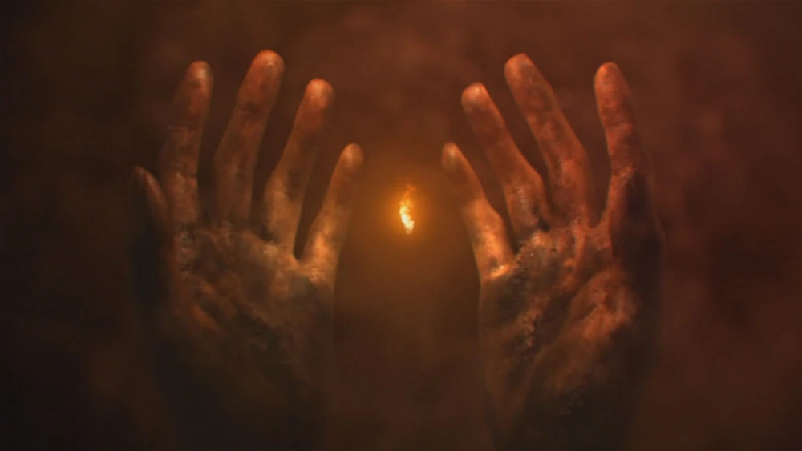

L'ULTIMA RISPOSTA
Isaac Asimov
Murray Templeton aveva quarantacinque anni ed era nel
pieno della vita: il suo corpo funzionava a meraviglia, a parte
certe delicate regioni delle coronarie, ma tanto bastò a metterlo
nei guai.
Il dolore cominciò all'improvviso, arrivò a vette insopportabili e poi a poco a poco rifluì.
Murray sentì il ritmo del respiro rallentare e una sorta di pace scendere su di lui.
Non c'è piacere più grande dell'assenza di dolore dopo aver
sofferto intensamente.
Murray si sentì così euforico che ebbe l'impressione di non
essere più sulla terra, ma di galleggiare nell'aria.
Aprì gli occhi e vide con divertimento che i suoi colleghi erano ancora in agitazione.
Quando l'attacco aveva colpito, senza preavviso, si trovava in una stanza del laboratorio, e prima
di perdere i sensi, sopraffatto dal dolore, aveva sentito gli altri gridare di sorpresa.
Ora, nonostante che il dolore fosse scomparso, i colleghi si
affannavano ancora intorno al suo corpo caduto...
...Che, notò con una certa meraviglia, lui stesso poteva vedere con perfetta chiarezza. Da una posizione elevata.
C'era un Murray per terra, con le membra scomposte e la
faccia contorta, e un Murray "per aria", tranquillo e distaccato
osservatore.
Pensò: Miracolo dei miracoli! Tutte quelle scempiaggini sulla vita-dopo-la-vita erano vere!
E sebbene non fosse la scoperta più decorosa, per un fisico
ateo com'era sempre stato lui, Murray provò soltanto una leggera sorpresa e nessun turbamento della pace in cui era immerso.
Pensò: Dovrebbe esserci un angelo, o qualcosa del genere,
che mi venga a prendere.
La scena mondana cominciò ad affievolirsi; la coscienza di
Murray Templeton fu invasa dall'oscurità, e in lontananza,
come un ultimo barlume di luce, apparve una figura dall'aspetto
vagamente umano che irradiava calore.
Murray pensò: Che burla, per me! Stai a vedere che vado in Paradiso.
Nel pensare questo si accorse che la luce era scomparsa, ma
il calore restava. La pace non fu minimamente turbata, anche
se nell'Universo erano rimasti soltanto lui e la Voce.

La Voce disse: - L'avrò fatto un'infinità di volte, ma è
sempre un piacere venire a raccogliere un frutto della vittoria.
Murray avrebbe voluto dire qualcosa, ma pensò di non
avere bocca, lingua né corde vocali. Tuttavia cercò di proferire
parola. Senza bocca, tentò di mugolare, o piuttosto di
borbottare, nella speranza di far vibrare... qualcosa.
E le parole vennero. Sentì la propria voce (sì, abbastanza
riconoscibile) e le parole infinitamente chiare.
Murray chiese: - Mi trovo in Paradiso?
La Voce disse: - Questo non è un "luogo" nel senso che
tu dài alla parola.
Murray era imbarazzato, ma gli premeva un'altra domanda:
- Scusatemi se vi sembro un po' grezzo. Voi siete Dio?
Senza cambiare tono, e senza in alcun modo increspare la
perfezione cristallina del suo timbro, la Voce riuscì a suonare
divertita. - È strano, ma questa domanda me la fanno sempre.
Anche se in un numero infinito di modi, si capisce. In realtà
non c'è una risposta che tu possa comprendere. Io sono: è tutto
quello che posso dirti. Interpreta pure le mie parole nel modo
che preferisci.
Murray ribatté: - Ma io che cosa sono? Un'anima? Un'essenza
personificata? - Cercò di non sembrare sarcastico, ma
gli parve di non esserci riuscito. Per un attimo pensò di
completare la frase con un "Vostra Grazia", "Santità" o cose del
genere, per bilanciare l'effetto del sarcasmo; ma non ne fu
capace, anche se per la prima volta nella sua esistenza dovette
prendere in considerazione l'eventualità di essere punito per la
sua insolenza (peccato?) con l'Inferno o un qualche equivalente.
La Voce, tuttavia, non sembrava offesa. - Perfino per uno
come te la risposta a questa domanda è facile. Puoi considerarti
un'anima, se vuoi, ma in realtà sei un nesso di forze
elettromagnetiche il cui schema è tale che le relative connessioni e
relazioni corrispondono perfettamente a quelle del tuo cervello
nell'esistenza fisica... e quando dico perfettamente intendo fino
all'ultimo dettaglio.
Quindi hai la tua capacità di pensare, i tuoi
ricordi, la tua personalità. Ti sembra, in una parola, di essere
ancora tu.
Murray non riusciva a crederci. - Volete dire che l'essenza
del mio cervello era eterna?
- Nient'affatto. Non c'è niente di eterno a parte ciò che
decido io. Il nesso di cui ti parlavo l'ho fabbricato personalmente,
mentre eri ancora in vita, e l'ho attivato nel momento in cui
la vita è cessata.

La Voce pareva compiaciuta, e dopo un momento di pausa continuò:
È una realizzazione complessa, ma di grande
precisione. Potrei farla per tutti gli esseri che vivono sul tuo
mondo, ma ho deciso di no. C'è piacere nella selezione.
- Volete... vuoi dire che ti limiti a sceglierci in pochi?
- Molto pochi.
- E che ne è degli altri?
- Inghiottiti dall'oblio! Oh, voi lo chiamate Inferno.
Se ne avesse avuto la possibilità, Murray sarebbe arrossito.
- Io non lo chiamo in nessun modo. Ma non avrei creduto di
essere così virtuoso da venire Eletto...
- Virtuoso? Ah, capisco che cosa vuoi dire. Ho qualche
difficoltà a minimizzare i miei pensieri in modo tale da essere
in sintonia con i tuoi. No, non ti ho scelto per la tua virtù ma
per le tue qualità di pensatore. Così come scelgo altri fra i
milioni di specie intelligenti dell'universo.
Murray provò un'immediata curiosità: era l'abitudine di una
vita. - Li scegli tutti da solo o ci sono altri esseri come te?
Per un attimo Murray ebbe l'impressione che l'Essere fosse
lievemente stizzito, ma quando la Voce risuonò non aveva alcuna
inflessione emotiva.
Se io sia il solo o se ci siano altri come me non ha importanza.
L'universo dal quale provieni è mio, e mio soltanto.
L'ho inventato e costruito io, e segue i miei scopi.
- Ma con tutti i miliardi di "nessi" che hai creato, perché
ti attardi con me? Sono così importante?
La Voce disse: Non sei affatto importante. Io ho la facoltà
di essere contemporaneamente anche con gli altri, o
almeno, la tua percezione la vivrebbe come contemporaneità.
- Però sei uno solo...
Di nuovo quell'aria divertita. La Voce disse: - Cerchi di
farmi cadere in contraddizione? Se fossi un'ameba che per
"individui" intende organismi formati da una sola cellula e se
chiedessi a una balena, formata da molti miliardi di cellule, di
dirti se è "una" o multipla, come pensi che potrebbe rispondere
la balena in modo da farsi capire dall'ameba?
Murray disse, asciutto: - Ci penserò. Può darsi che arrivi
a una soluzione.
- Esatto, questa è la tua funzione. Tu penserai.
- A che scopo? Tu sai già tutto, suppongo.
- Anche se sapessi tutto, potrei non sapere di saperlo.
- Mi sembra uno di quei detti orientali che sembrano così
precisi perché non significano niente.
La Voce disse: - Sei promettente: rispondi al mio paradosso
con un paradosso... solo che il mio non era un vero paradosso.
Rifletti: io esisto da sempre, ma questo che cosa significa?
Che non posso ricordare l'inizio della mia esistenza.
Se potessi, non sarei esistito da sempre. Ma se non posso ricordare
l'inizio della mia esistenza, c'è almeno una cosa che mi è
precluso conoscere.
- Inoltre, se è vero che la mia sapienza è infinita, dev'essere
vero per conseguenza che lo scibile è infinito. In tal caso, come
essere sicuri che i due infiniti coincidano? L'infinito della
conoscenza potenziale può essere molto più grande di quello
della mia effettiva sapienza. Eccoti un facile esempio: se io
conoscessi tutti i numeri pari, conoscerei una serie infinita. Eppure
non conoscerei neppure un numero dispari".
Murray disse: - Ma i numeri dispari potresti calcolarli. Dividendo
per due ogni numero pari della serie infinita, ne otterresti
un'altra infinita che in sé conterrebbe quella dei numeri dispari!
La Voce replicò: - Sei un uomo d'ingegno, mi fa piacere.
Sarà tuo compito escogitare per me altre soluzioni del genere,
naturalmente molto più complesse, in modo da colmare la distanza
fra il conosciuto e ciò che ancora è da conoscere. Hai i tuoi
ricordi: usa tutti i dati che hai appreso o che sei in grado
di dedurre da essi. Se necessario ti sarà concesso accedere ad
eventuali informazioni supplementari, legate naturalmente ai
problemi ai quali ti dedicherai.
- Ma non potresti fare tutto da solo?
La Voce rispose: - Potrei, ma è più interessante così. Ho
creato l'universo per avere un maggior numero di problemi coi
quali cimentarmi. Ho introdotto il principio
d'indeterminazione, l'entropia e altri fattori casuali per non
rendere tutto subito ovvio. Ha funzionato, perché mi sono
divertito moltissimo.
- In seguito ho introdotto fattori più complessi, che prima
hanno prodotto la vita e poi l'intelligenza, e ho usato
quest'ultima per avere a mia disposizione una specie di squadra
di ricerca su scala cosmica. Non che abbia veramente bisogno
d'aiuto, ma la cosa rende più imprevedibile l'esito delle mie ricerche:
ho scoperto che non ero più in grado di prevedere quale sarebbe
stato il prossimo importante sviluppo della conoscenza,
chi l'avrebbe realizzato e con quali mezzi.
Murray domandò: - E i risultati sono soddisfacenti?
- Certo. Non passa secolo senza che da qualche parte non
venga scoperto qualcosa di fondamentale.
- Qualcosa che tu avresti potuto pensare da solo, ma su cui
non avevi ancora riflettuto...
- Sì.
- Credi davvero che io possa esserti utile, in questo senso?
- Nell'arco del prossimo secolo no di certo. Ma dato che
hai un ingaggio per l'eternità, il tuo successo in tempi lunghi
è praticamente certo.
Murray disse: - Devo pensare per l'eternità? Per sempre?
- Sì.
- A che scopo?
- Te l'ho detto. Colmare il mio distacco fra ciò che è noto
e ciò che rimane da conoscere.
- No, a parte questo. A che scopo colmare il distacco?
- Era quello che facevi nella vita fisica. Non era il tuo sco-
po, allora?
Murray rispose: - Il mio scopo era scoprire qualcosa cui io,
e io soltanto potevo accedere. Ottenere il plauso dei colleghi.
Provare la soddisfazione di essere riuscito nel mio lavoro ben
sapendo che il tempo concessomi per compierlo era limitato.
Ora, tutto quello che posso scoprire è qualcosa alla quale tu
stesso arriveresti facilmente, se solo ti prendessi il disturbo.
Inoltre tu non puoi lodarmi: puoi solo divertirti. Non c'è
merito nel raggiungere uno scopo quando si ha tutta
l'eternità davanti.
- Non ritieni che il pensiero e la conoscenza valgano di per
sé? Non pensi che tutti gli altri scopi siano secondari?
- In un tempo limitato, sì. Ma con tutta l'eternità davanti, no.

Ulisse, il cercatore di conoscenza per antonomasia
- Capisco il tuo punto di vista. Comunque non hai scelta.
- Hai detto che devo pensare, ma non puoi obbligarmi a farlo.
La Voce disse: - Non intendo costringerti direttamente,
anche perché non ne ho bisogno. Dal momento che non avrai
nient'altro da fare, penserai. Non potrai farne a meno.
- Allora mi darò uno scopo. Mi inventerò una mèta.
Tollerante, la Voce disse: - Puoi farlo, certamente.
- Ho già trovato il mio scopo.
- Posso sapere qual è?
- Lo sai già. Questa non è una normale conversazione, credi
che non l'abbia capito? Nel fabbricare il mio “nesso” hai
fatto in modo che io avessi la sensazione di sentirti parlare e di
parlarti a mia volta, ma in realtà tu trasferisci i miei pensieri a
te e i tuoi a me direttamente. Quando io concepisco un'idea tu
ne sei immediatamente informato, e non hai bisogno che io te
la comunichi volontariamente.
La Voce disse: - Hai ragione al cento per cento. Sono
compiaciuto. Ma mi farà piacere se vorrai comunicare con me
volontariamente.
- Allora senti: lo scopo del mio pensiero sarà scoprire il
modo di distruggere il nesso elettromagnetico che costituisce la
mia conoscenza. Non voglio lavorare al solo scopo di divertirti.
Non voglio esistere in eterno al solo scopo di soddisfarti.
Rivolgerò tutti i miei sforzi verso la distruzione del nesso.
Questo divertirà me.
- Non ho obiezioni - replicò la Voce. Perfino uno scopo suicida
come quello che ti sei prefisso può rivelare, tuo malgrado,
interessanti frammenti di conoscenza.
E ovviamente, se anche tu dovessi riuscire sarebbe tutto
inutile, perché ti ricostruirei subito e in modo tale da rendere
impossibile quel particolare tipo di suicidio. Dovresti escogitarne
un altro più sottile, dopodiché io ti ricostruirei daccapo e così via.
Potrebbe trasformarsi in un gioco interessante, ma tu comunque
esisterai in eterno. È la mia volontà.

Murray si sentì fremere, ma parlò con perfetta calma: - Sono capitato
all'Inferno, per caso? Dalle tue parole devo dedurre che l'Inferno
non esiste, ma se ci fossimo dentro, la menzogna farebbe parte del gioco.
- Se la pensi così, a che serve che io ti rassicuri? Comunque
per quel che vale, ti garantisco che qui non sei all'Inferno.
Non esistono il Paradiso e l'Inferno: esisto solo io.
- Allora ascoltami - disse Murray. - Mettiamo per ipotesi che i
miei pensieri si rivelino inutili. Se quest'ipotesi si verificasse,
non ti converrebbe distruggermi e farla finita con me?
- Come premio? Tu pretendi il Nirvana come premio del
fallimento e metti le mani avanti per garantirmi che fallirai? Non
è leale, amico mio. Tu non puoi fallire, per il semplice fatto che
hai l'eternità davanti. In condizioni simili è inevitabile che tu
abbia almeno un pensiero interessante, per quanto ti ostini!
- Allora mi troverò un altro scopo. Non cercherò di distruggermi,
ma farò di tutto per umiliarti. La mia mèta sarà questa.
Escogiterò qualcosa che non soltanto non hai pensato
finora, ma che non potresti mai pensare! Inventerò l'ultima
risposta, quella oltre la quale non è possibile altra conoscenza.
Disse la Voce: - Tu non intendi la natura dell'infinito.
Possono esserci cose che non mi sono preso la briga di conoscere,
lo ammetto: ma niente che io non possa conoscere.
Pensieroso, Muray ribatté: - Non puoi conoscere l'inizio
della tua esistenza. L'hai detto tu. Di conseguenza non puoi
conoscere la tua fine. Bene, allora il mio scopo sarà questo, e
troverò l'ultima risposta. Non distruggerò me, distruggerò te, se
tu non mi distruggi per primo.
La Voce disse: - Ah, vedo che sei arrivato al nocciolo della
questione in un tempo inferiore alla media! Pensavo che ci avresti
messo di più. Nessuna delle intelligenze che mi tengono compagnia
in questa vita di eterno pensiero chiederebbero di meglio
che annientarmi. Ma non si può fare.
- Io ho tutta l'eternità - rispose Murray - e troverò il modo
di liquidarti.
La Voce disse, paziente: - Allora provaci. - E lo lasciò solo.
Ora Murray aveva uno scopo ed era contento.
Infatti, che cosa c'è di più desiderabile della fine per un'Entità
che sappia di essere eterna?
A che scopo, se non per trovare la risposta a questo problema,
avrebbe lavorato la Voce per innumerevoli miliardi di anni?
Per quale ragione avrebbe creato l'intelligenza e ne avrebbe
preservati alcuni esemplari, in modo da aiutarlo nella grande ricerca?
Ognuno, come Murray, nutriva la segreta ambizione
che lui e solo lui ci sarebbe finalmente riuscito.
Scrupoloso, animato dal sacro fuoco dello Scopo, Murray
cominciò a pensare.
Il tempo non gli mancava.